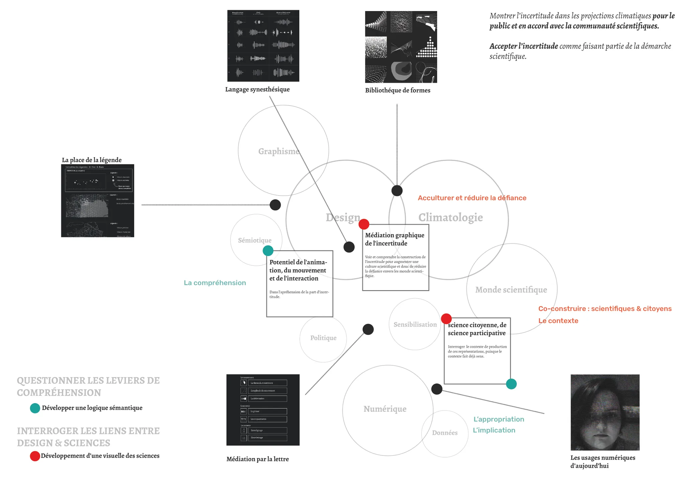
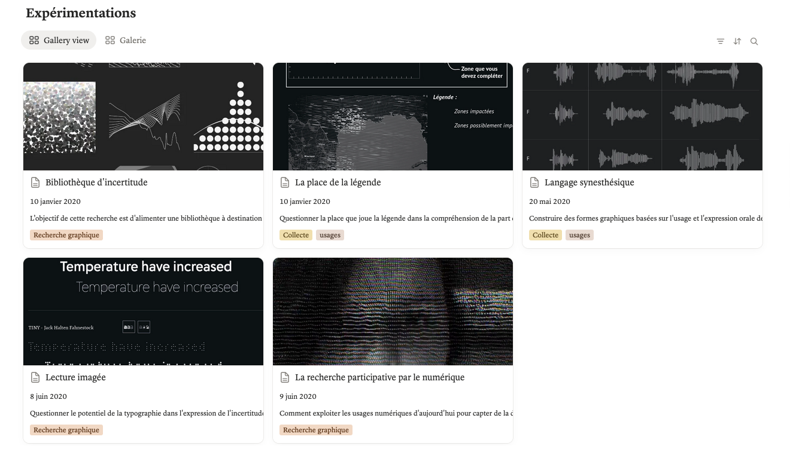
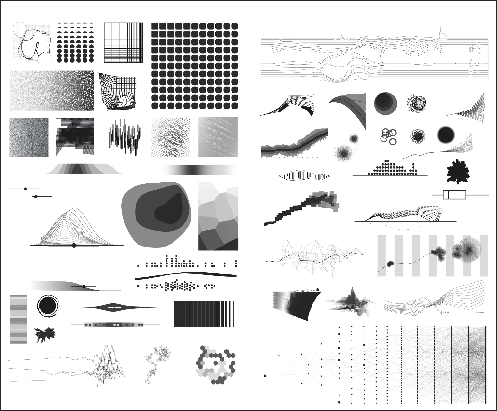
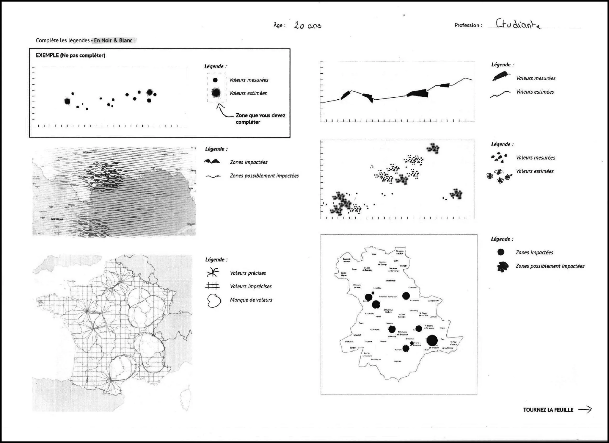
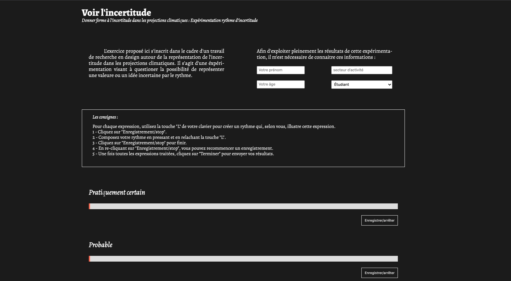
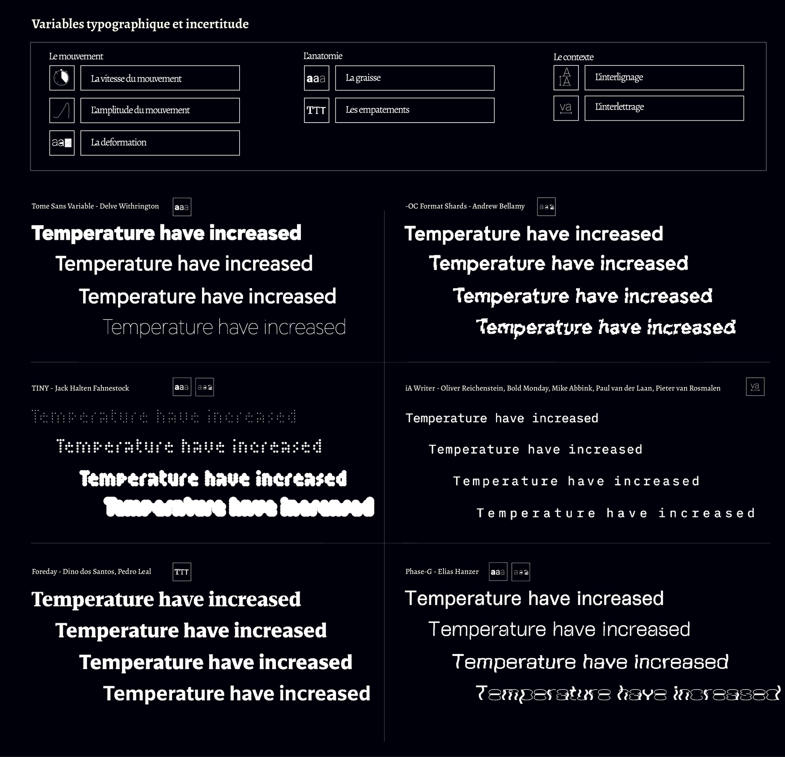

Plateforme d'exercices
Commanditaires : DSAA design interactif - Pôle supérieur de design de Villefontaine
Mission : Rédaction d 'un mémoire de recherche en design interactif qui
traite la question de la représentation de l'incertitude dans les projections climatiques.
Malgré l'évidence d'une urgence climatique, la défiance du public envers les conclusions
scientifiques reste bien présente et réclame d'être vigilant concernant la révélation de la part
d'incertitude au sein des anticipations climatiques. En effet, il s'agit donc de penser la
représentation d'une incertitude positive, c'est à dire une représentation qui rend compte des
débats et des particularités liées à cette science de l'anticipation. L'incertitude fait partie de
la construction de l'anticipation climatique mais elle ne donne pas pour autant un caractère
incertain à celle-ci.
Les expérimentations proposées dans ce manuscrit s'incrivent au sein de deux grands pôles de
recherche que sont
la médiation scientifique de l'incertitude et la contextualisation de ce
langage dans une pratique et des usages.
2020
Visiter le site ↗




